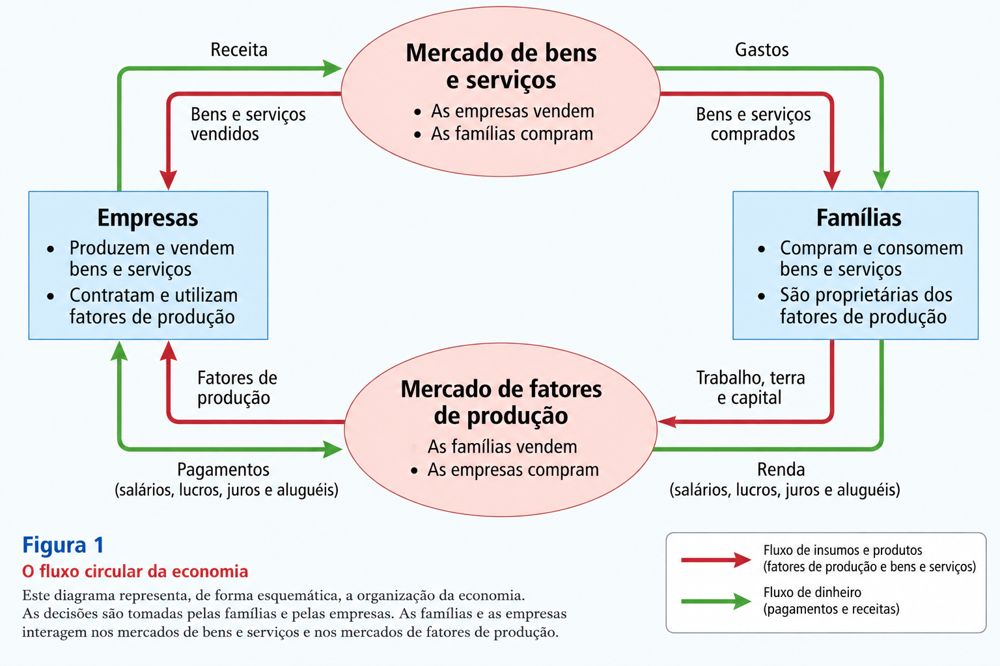
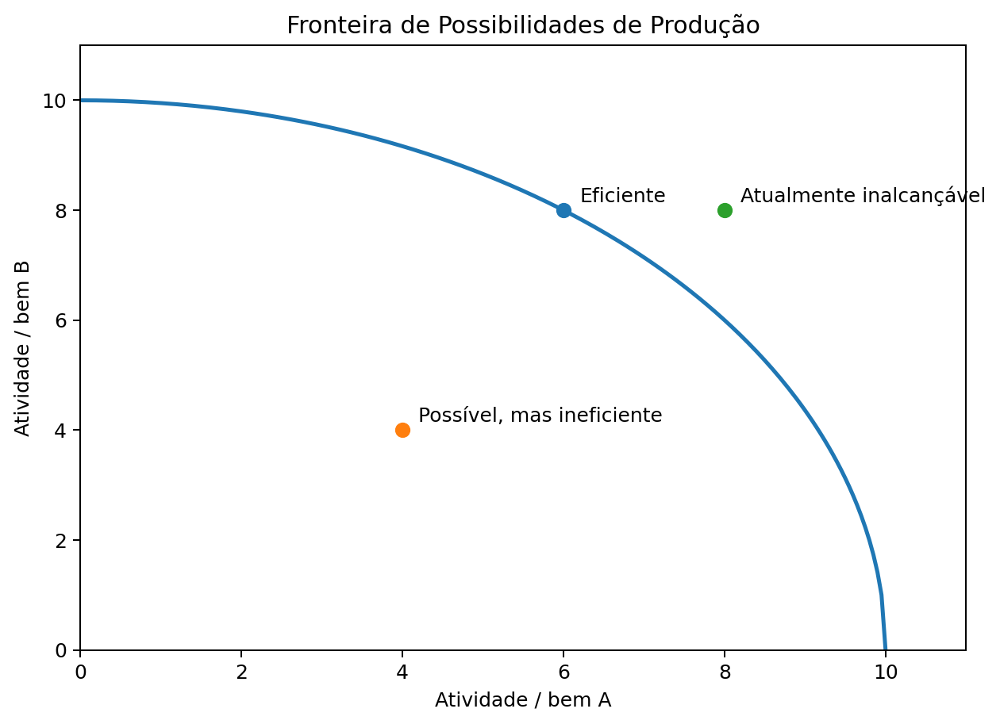

Aula 1 — Como pensar economicamente
04 — Pessoas respondem a incentivos
05 — Como as pessoas interagem
07 — Pensando como um economista
08 — Fluxo circular da economia
09 — Fronteira de Possibilidades de Produção
10 — Microeconomia e Macroeconomia
11 — Afirmações positivas e normativas
16 — Amarrando os três capítulos
Ao final desta aula, você deverá ser capaz de:
Pergunta para começar
Uma unidade administrativa dispõe de orçamento e tempo limitados. Precisa decidir entre capacitar servidores, comprar computadores e contratar um serviço. É possível fazer tudo ao mesmo tempo?
Essa pergunta resume o ponto de partida da economia: recursos são limitados, enquanto necessidades e objetivos são numerosos.
Economia estuda como pessoas e sociedades administram recursos escassos.
Escassez não significa que determinado recurso não exista. Significa que a quantidade disponível não permite realizar simultaneamente tudo aquilo que gostaríamos.
Isso vale para dinheiro, equipamentos e matérias-primas, mas também para um recurso presente diariamente no trabalho administrativo: tempo.
Aplicação à Administração
Uma equipe possui 40 horas disponíveis para concluir três atividades que, juntas, exigiriam 60 horas. A equipe terá de estabelecer prioridades. Ao escolher uma atividade, necessariamente deixará de realizar ou adiará parte de outra.
Quando não podemos fazer tudo, precisamos escolher. Toda escolha envolve um trade-off, isto é, uma troca entre objetivos.
Exemplos:
Escolher uma alternativa significa abrir mão de outra.
O custo de oportunidade de uma escolha é aquilo de que abrimos mão para realizá-la.
Uma servidora dispõe de duas horas. Ela pode participar de uma capacitação ou concluir um relatório.
Se participa da capacitação, o custo de oportunidade inclui aquilo que poderia ter produzido durante essas duas horas. O custo relevante, portanto, não precisa ser apenas monetário.
Uma pergunta útil para qualquer decisão é:
O que estou deixando de fazer ao escolher esta alternativa?
Muitas decisões não são simplesmente “fazer ou não fazer”. Elas envolvem decidir se devemos fazer um pouco mais ou um pouco menos.
Essa é a ideia de decisão na margem.
Aplicação à Administração
Uma equipe já realizou quatro horas de atendimento extraordinário. A questão pode não ser se haverá atendimento, mas se mais uma hora gera benefício suficiente para justificar o custo adicional.
A lógica básica é comparar benefício adicional e custo adicional.
Um incentivo é algo que altera os custos ou benefícios associados a uma decisão e, por isso, pode modificar o comportamento.
Exemplos: desconto por pagamento antecipado, multa por atraso, gratificação associada a uma atividade ou redução do tempo necessário para executar um procedimento.
Consequências não pretendidas
Quando uma regra altera incentivos, as pessoas podem mudar seu comportamento. Por isso, uma política ou procedimento deve ser analisado não apenas pelo efeito pretendido, mas também pelas possíveis respostas das pessoas envolvidas.
As pessoas não produzem sozinhas tudo aquilo que consomem. Famílias, empresas e organizações dependem umas das outras e realizam trocas.
A especialização permite concentrar esforços em determinadas atividades e obter outros bens e serviços por meio da troca.
Em uma economia de mercado, milhões de decisões são tomadas de forma descentralizada.
Famílias decidem onde trabalhar, o que consumir e quanto poupar. Empresas decidem o que produzir, quanto produzir e quais trabalhadores e insumos contratar.
Os preços ajudam a coordenar essas decisões.
Importante
Dizer que mercados podem coordenar atividades econômicas não significa afirmar que todos os resultados de mercado são sempre adequados. Ao longo da disciplina veremos situações em que existem razões econômicas para a atuação do governo.
A realidade econômica é complexa. Para compreendê-la, economistas utilizam hipóteses e modelos.
Um modelo econômico é uma representação simplificada da realidade. A simplificação permite concentrar a análise nos elementos relevantes para determinada pergunta.
Um mapa do metrô não reproduz cada prédio, árvore ou rua. Ele elimina detalhes para destacar linhas, estações e conexões. Um modelo econômico segue lógica semelhante.
Um modelo inicial representa a interação entre famílias e empresas em dois mercados.

No mercado de bens e serviços, empresas vendem e famílias compram.
No mercado de fatores de produção, famílias oferecem fatores como trabalho e empresas utilizam esses fatores na produção.
Há fluxos reais de bens, serviços e fatores e fluxos monetários correspondentes.
A Fronteira de Possibilidades de Produção (FPP) mostra diferentes combinações de dois bens ou atividades que podem ser obtidas com os recursos e a tecnologia disponíveis.

A FPP reúne quatro ideias importantes: escassez, trade-offs, custo de oportunidade e eficiência.
Um ponto sobre a fronteira representa utilização eficiente dos recursos. Um ponto dentro da fronteira é possível, mas indica subutilização. Um ponto fora da fronteira não pode ser alcançado com os recursos e a tecnologia atuais.
Microeconomia estuda decisões de indivíduos e empresas e suas interações em mercados específicos.
Macroeconomia estuda fenômenos relacionados à economia como um todo, como inflação, desemprego e crescimento econômico.
Regra prática
Micro: decisões e mercados específicos.
Macro: comportamento agregado da economia.
Uma afirmação positiva descreve ou procura explicar como o mundo é e, em princípio, pode ser confrontada com evidências.
“A implantação do novo sistema reduziu o tempo médio de atendimento.”
Uma afirmação normativa expressa uma avaliação sobre como o mundo deveria ser.
“A instituição deveria substituir os atendimentos presenciais por atendimentos digitais.”
A primeira pode ser investigada com dados. A segunda envolve também valores e objetivos.
Se recursos são escassos e escolhas têm custos de oportunidade, pessoas e organizações podem se beneficiar ao se especializar em determinadas atividades e trocar entre si.
Para decidir quem deveria se especializar em quê, precisamos distinguir vantagem absoluta e vantagem comparativa.
Uma pessoa possui vantagem absoluta quando consegue produzir determinado bem ou realizar determinada tarefa utilizando menos recursos do que outra.
| Pessoa | Processos analisados por hora |
|---|---|
| Ana | 8 |
| Bruno | 5 |
Ana possui vantagem absoluta nessa atividade.
Mas isso ainda não determina a melhor divisão de tarefas.
A vantagem comparativa depende do custo de oportunidade.
Considere duas atividades:
| Pessoa | Relatórios por hora | Processos organizados por hora |
|---|---|---|
| Ana | 6 | 12 |
| Bruno | 2 | 8 |
Ana possui vantagem absoluta nas duas atividades.
Para Ana, 1 relatório custa 2 processos. Para Bruno, 1 relatório custa 4 processos.
Já 1 processo custa 0,5 relatório para Ana e 0,25 relatório para Bruno.
Logo, Ana possui vantagem comparativa na elaboração de relatórios, enquanto Bruno possui vantagem comparativa na organização de processos.
Uma pessoa pode ser melhor em todas as tarefas e, ainda assim, ser vantajoso dividir o trabalho.
Quando cada pessoa se concentra relativamente mais na atividade em que possui menor custo de oportunidade, a produção conjunta pode aumentar.
A ideia não é “quem é melhor em tudo deve fazer tudo”.
A pergunta correta é:
Do que cada pessoa precisa abrir mão para executar cada tarefa?
Essa lógica ajuda a compreender divisão do trabalho, especialização profissional e comércio.
Escassez → escolhas → trade-offs → custo de oportunidade → incentivos → modelos → especialização → vantagem comparativa → ganhos da troca
Ideia central da Aula 1
Economia começa com uma constatação simples: não podemos ter tudo ao mesmo tempo.
Por isso escolhemos. Para compreender essas escolhas, observamos seus custos de oportunidade, os incentivos envolvidos e as possibilidades de especialização e troca.
Imagine uma equipe com dois servidores responsáveis por responder solicitações e conferir documentos. Um deles executa ambas as tarefas mais rapidamente.
Antes de concluir que ele deveria fazer tudo, responda:
Próxima aula
Na próxima etapa, passaremos das escolhas e da especialização para o funcionamento dos mercados: oferta, demanda e formação de preços.
MANKIW, N. Gregory. Principles of Economics. 8. ed. Cengage Learning, 2018. Capítulos 1, 2 e 3.